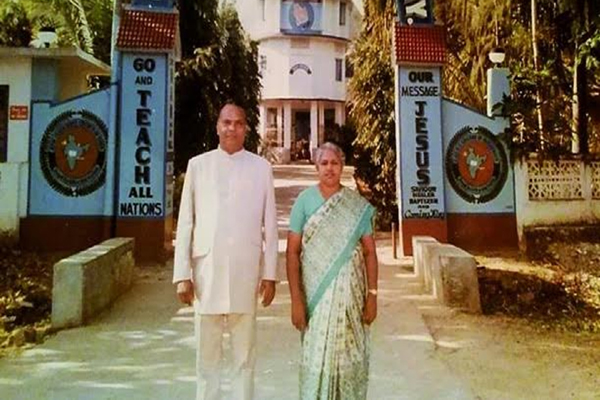
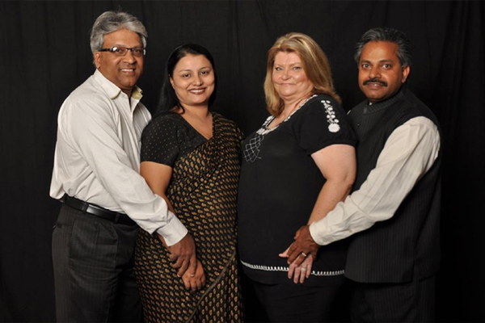

<div class="pages">
  <div data-page="features" class="page no-navbar">
    <div class="page-content">
    
  <div class="navbarpages">
    <div class="navbar_left">
      <div class="logo_text"><a href="index.html">Christ <span>For</span> India</span></a></div>
    </div>      
    <a href="#" data-panel="left" class="open-panel">
      <div class="navbar_right"></div>
    </a>
    <a href="index.html" data-panel="right" class="navbgtransblue">
      <div class="navbar_right whitebg"></div>
    </a>          
  </div>
     
     <div id="pages_maincontent">
      
      <h2 class="page_title">About</h2>

      <!-- Slider -->
                 <div class="swiper-container-pages swiper-init" data-effect="slide" data-pagination=".swiper-pagination">
                    <div class="swiper-wrapper">
                    
                      
                      <div class="swiper-slide">
      
                       </div>
                      <div class="swiper-slide">
      
                       </div>
                       <div class="swiper-slide">
      
                       </div>
                      <div class="swiper-slide">
      
                       </div>
                      <div class="swiper-slide">
      
                       </div> 
                       <div class="swiper-slide">
      
                       </div>
                       <div class="swiper-slide">
      
                       </div>
                       <div class="swiper-slide">
      
                       </div>      
             
                    </div>
                    <div class="swiper-pagination"></div>
                  </div>
    
    <div class="page_single layout_fullwidth_padding toolbarpage">  
    
    
              <blockquote>
                <p align="justify">After 18 years in America, Apostle Dr. P. J. Titus and Mary Titus returned to India to preach the gospel to the unreached. Together they have worked hard over the years to see the vision of God become a reality.</p>
              </blockquote>
        
            
              
              <a href="#" class="button_full">Our Founders</a>

              
              
              <p align="justify">After 18 years in America, Apostle Dr. P. J. Titus and Mary Titus returned to India to preach the gospel to the unreached. Together they have worked hard over the years to see the vision of God become a reality.<br><br>

In 1981, Dr. P.J. Titus heeded the call of the Lord to return to his native country of India. Through prayer and the generosity of many likeminded people around the world, the vision of reaching one billion souls for Christ began with the purchase of land in Bheemunipatnam. The COTR College of Ministries and New Testament Church of India were registered and began impacting India.<br><br>

 Dr. Titus and his wife, Mary, were also concerned with the plight of lost and orphaned children in India. So, in addition to the church and theological seminary, he established the Nava Jeevan Public School and the New Life Children’s Home. Over the years, Dr. Titus looked to expand the scope of the ministry in order to maximize the impact he could make in reaching the spiritually starved. The ministry campus now incorporates the New Testament Church, COTR Theological Seminary, Nava Jeevan Public School, New Life Children’s Home, and Jyothi Hospital.<br><br>

God placed a heavy burden on the heart of Dr. P.J. Titus for the people of his native land of India. Dr. Titus had a divine vision to serve the needy fellow humans in India. He and his wife Mary left the United States in 1981 and returned to their home country to establish CHRIST FOR INDIA, the Lord’s ministry. All the years of untiring dedication made Dr. Titus an eminent theologian, a missionary, an evangelist, and worldrenowned charismatic orator.<br><br>

He took advantage of every opportunity to preach the gospel to his native people and felt that each native person he trained would then go out and instruct others. He remained focused on his mission to make disciples of one billion people in his native country of India until he entered into his glory in September 2003.<br><br>

When Dr. P. J. Titus was promoted to Glory in 2003, Mrs. Mary Titus then assumed the leadership as cofounder and president in India, and with the help of her family continues to reach India for Christ. The couple’s eldest son, Johnson P. Titus, is serving the Lord full-time in the COTR ministry in Visakhapatnam. In 2011 Mary Titus handed the leadership and title of President in India to Johnson Titus. <br><br>

Their second son, Jameson P. Titus, serves as President of CHRIST FOR INDIA in the United States and represents CHRIST FOR INDIA through out the world. Their daughter, Jyothi supports the ministry from their home in Dallas, Texas</p>


              
           

                
              


          </div>
      


          
         
         
      
         
   
      
      
    </div>
  </div>
</div>